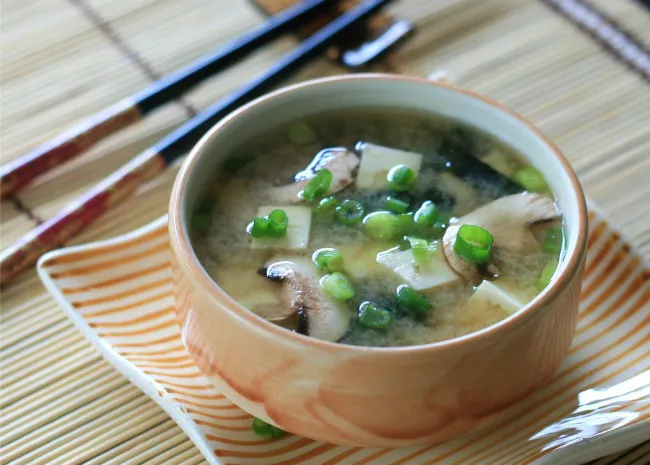

Miso Soup Recipe

Many Japanese dinners begin with miso soup -- "One soup, three sides," as the saying goes.
This simple, comforting Japanese miso soup is made with kombu, bonito flakes, and miso paste "Loved it!" raves Buckwheat Queen. "My daughter said it tasted just like the soup at her favorite Japanese restaurant.
Ingredients
- 4 cups water
- 1 (4 inch) piece dashi kombu (dried kelp)
- 6 ounces tofu, cut into chunks
- 1 teaspoon dried wakame
- 3 tablespoons miso paste
- ¼ cup chopped green onions
Steps
- Heat water in a large pot over low heat. Add kombu and cook until just simmering. Stir in bonito flakes, then remove dashi stock from the heat. Let dashi sit, uncovered, for 5 minutes. Strain and set aside.
- Heat 3 1/2 cups dashi in a pot over medium heat. Add tofu and wakame and stir to combine. Remove 1 cup warmed dashi to a small bowl and whisk in miso paste. Pour miso mixture back into the pot with remaining dashi. Stir until warmed through. Serve garnished with chopped green onions.